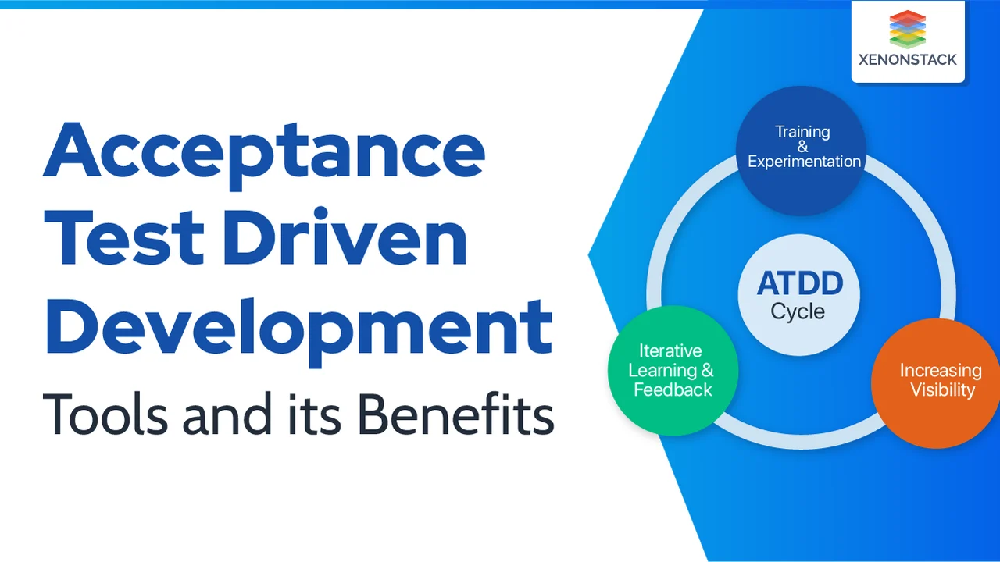

Acceptance test-driven development on meetod, mis kaasab kasutajate või klientide tagasisidet rakenduste loomisse.
Arenduse alguses luuakse automatiseeritud testid vastavalt määratud vastuvõtutestidele,
tagades toote vastavuse kasutajate ootustele. See meetod soodustab lihtsust, koostööd
ja pidevat tagasisidet, aidates saavutada parema vastavuse toote ja kliendi vahel.

Eelised
Annab nõuete kohta parema selgituse.
Probleemide/probleemide kiirem lahendamine.
Parandab koostööd meeskonnaüleste liikmete vahel.
Rohkem keskenduda klientide vajadustele.
Toimib kogu arendusprotsessi juhisena.
Lihtsam hallata.
Puudused
Õppimiskõver – ATDD kasutuselevõtt nõuab aega ja vaeva, mis võib alguses tootlikkust vähendada. Õige juhendamisega saab sellest üle.
Sõltuvus koostööst – Kui sidusrühmad pole aktiivselt kaasatud, võib ATDD rakendamine kannatada. Oluline on edendada koostöökultuuri.
Liigne dokumentatsioon – Liigne keskendumine aktsepteerimiskriteeriumidele võib põhjustada bürokraatiat. Vaja on tasakaalu selguse ja paindlikkuse vahel.
Muutuste keerukus – Hästi määratletud kriteeriumid võivad raskendada muudatuste tegemist. Paindlikkus aitab vältida probleeme ja säilitada efektiivsust.
Case Vahendi kasutus
FitNesse
FitNesse open source wikipõhine vahend, mis võimaldab arendada,
testijatel ja ärikasutajatel koostatakse kasutusmistest interaktiivsel viisil.
See toetab Atdd kus testid on loetavad ja käivitatavad otsesüsteemis.